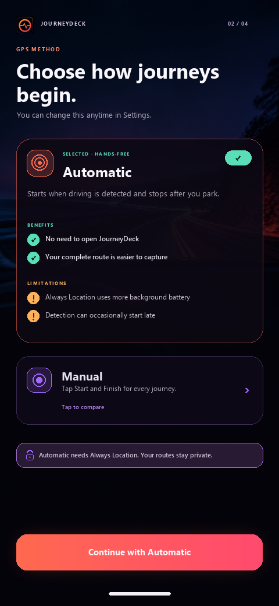

APPROVED
Expanded Choices
Both methods stay visible. Tapping the compact method expands its details; Continue advances to Apple Music setup.
ONBOARDING · SCREEN 02
Expanded Choices is the selected direction for JourneyDeck’s second first-launch screen.
